· · ·
概念设计｜在海与宫殿之间
一支以双人舞讲述回忆与抉择的音乐影像：从金色海面进入宫殿，穿过沉默、向往与冲突，最终凝结为一幅连接陆地与大海的细密画。
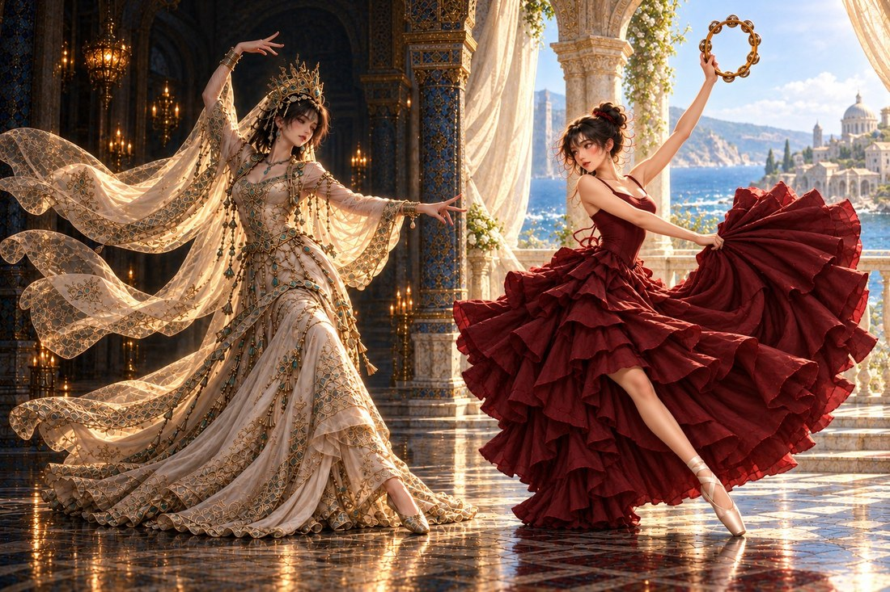
最新灯光与材质基准｜Coffee：暗宫殿、暗人物、发光白金衣料。Cola：明亮海景环境、暗酒红色哑光实布。
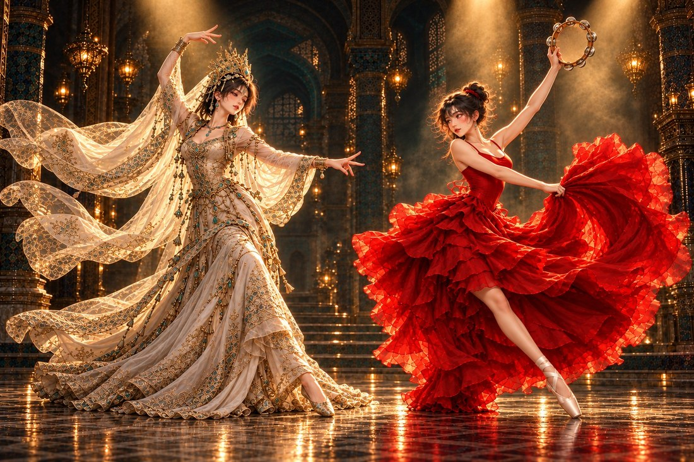
保留最初的双人构图与造型参考。灯光和 Cola 的服装颜色、材质，采用上方最新修订。
故事介绍
Coffee 是宫中沉默的王后。她独自在柱廊与高窗之间起舞，用仪式性的手势表达无法说出的心事；窗外的海面，引出 Cola 在帆船上的明亮回忆。
两人在临海阳台相遇，先轮流起舞、彼此观看，再转为双人对舞。听见兄弟前来迎接，她们共同走向大海；想到国王，又一起退回宫中。缓慢的仪式转身与热烈的跳转，将去留之间的冲突展开。
最终，两人凝结在相互回应的姿态中。相机围绕她们移动，教堂与大海逐渐化为同一幅细密画：岸上有教堂，海上有跃起的海豚，两人连接着陆地与海洋。
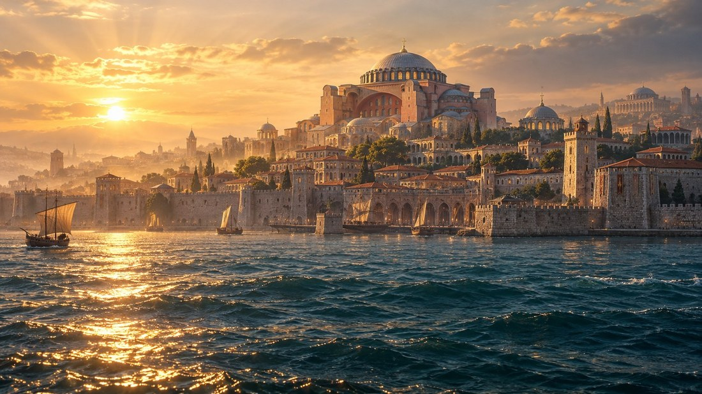
空间视觉参考｜辽阔明亮的海面与岸上厚重的教堂，构成回忆和宫中现实的两个世界。
整体风格
Coffee 一侧以深色大理石、柱廊与穹顶构成幽暗宫殿，亮部集中于白金衣料；Cola 一侧用明亮海景与日光建筑衬托暗红实布裙。两侧形成环境与衣物的反向明暗关系。
Coffee 立身、缓行、折腕、翻掌，保留凝视与停顿；Cola 以侧步、肩胯律动、击鼓和大幅跳转回应。二人同拍起落，各自保留性格。
前段推进进入故事，中段完整呈现舞蹈。结尾人物完全定姿，相机流畅环绕、升降与拉远，画面逐渐转成金箔、青金石蓝与朱红构成的细密画。
· · ·
灯光与材质参考
明暗关系以人物为单位建立：Coffee 是「暗环境中的发光衣物」，Cola 是「亮环境中的暗红布料」。环境亮度与衣物亮度形成对照。
暗宫殿，衣物发光
人物与建筑隐于暗部，白金长裙成为视觉亮源。
宫殿保持深暗，保留少量灯盏与柱面细节。Coffee 的脸、头发和身体处于低照度，以微弱轮廓光保持可读。
白金衣料柔和发光，刺绣、绣线与纱边透出细光；保留材质纹理，让光沿手势和薄纱延伸。
肃静、神秘、仪式感。人物凝视与停顿清楚，亮衣料从暗背景中显现。
亮环境，暗红实布
海景与日光建筑明亮，裙子保持深色与重量。
使用明亮的海面、天空与浅色建筑，日光和自然反射照亮人物。明亮主要来自环境与肤色。
暗酒红色，厚实、哑光、织物可见，完全不透。褶皱有重量，只在折面出现柔和暗红高光，保持实布质感。
开阔、热烈、有生命力。红裙依靠轮廓、褶皱和动作被看见，与明亮海景形成深浅对照。
· · ·
人物造型设计
发光白金与哑光暗红，静穆与热烈。两人的造型贯穿宫中、海上、阳台与最终细密画，保留各自清楚的轮廓与色彩。
Coffee｜宫中的王后
高贵 · 神秘 · 仪式感
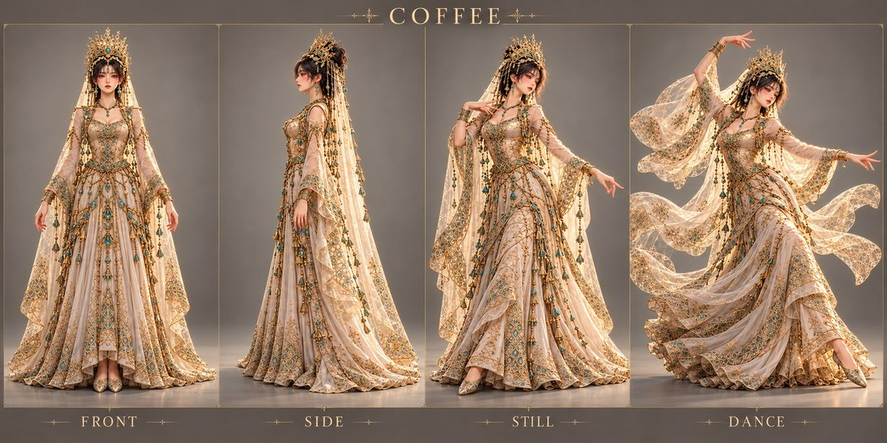
从左至右：正面、侧面、静态造型、服装动态参考。
深色挽发，华丽金色头冠；绿松石额饰、耳坠与项链，与金色垂链形成细密层次。
象牙白修身长裙，古金刺绣勾勒腰身；白金衣料、绣线与纱边呈柔和发光效果，暗环境中形成主要亮部。透明绣纱随手腕慢动作延展。
沉静凝视，立身沉肩。横臂、折腕、翻掌、收指；手势先定，身体后随。舞蹈动作以以下仪式舞修订图为准。
参考莎乐美绘画的姿态，采用「垂眸候场 → 横臂示意 → 翻掌承接 → 引纱回望 → 展掌止步 → 凝神定格」。每组动作保留凝视与停顿，突出王后的仪式感。
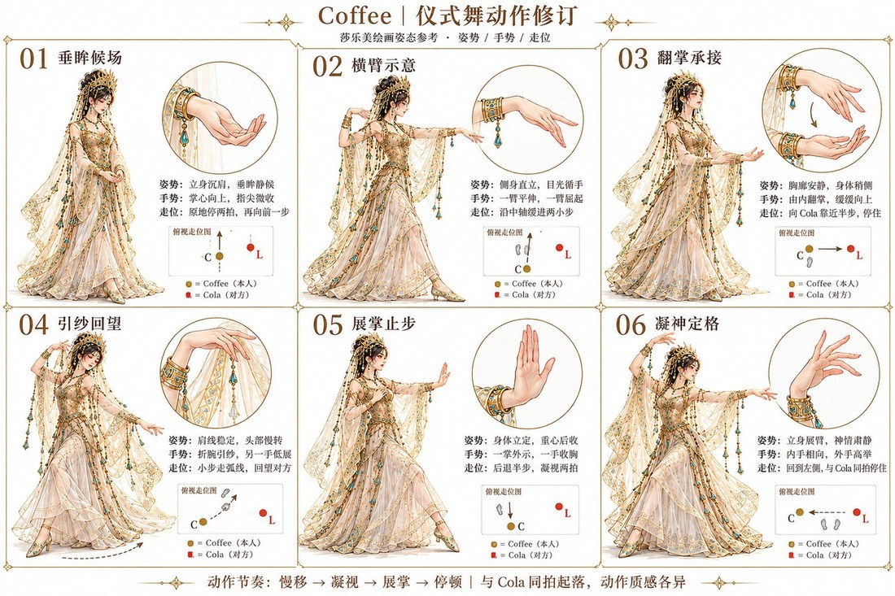
Cola｜海上的公主
热情 · 明亮 · 异域舞台感
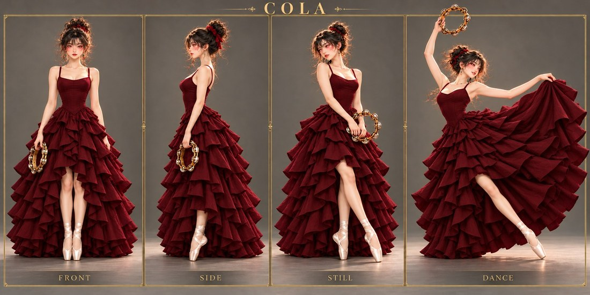
从左至右：正面、侧面、静态造型、动态舞姿。
深色高盘发配红色发饰，保留脸侧碎发；金色铃鼓是贯穿海上独舞与阳台对舞的标志道具。
暗酒红色细肩带上身与层叠布制裙摆，采用厚实、不透的哑光织物，保留细密布纹与有重量的褶皱；旋转时由整片实布展开。配浅色绑带舞鞋。
目光主动，表情明亮。侧步、肩胯律动、击鼓与大幅跳转；一手持鼓、另一手拍击，裙摆由步伐与旋转带动。
· · ·
01 海景、王权与教堂
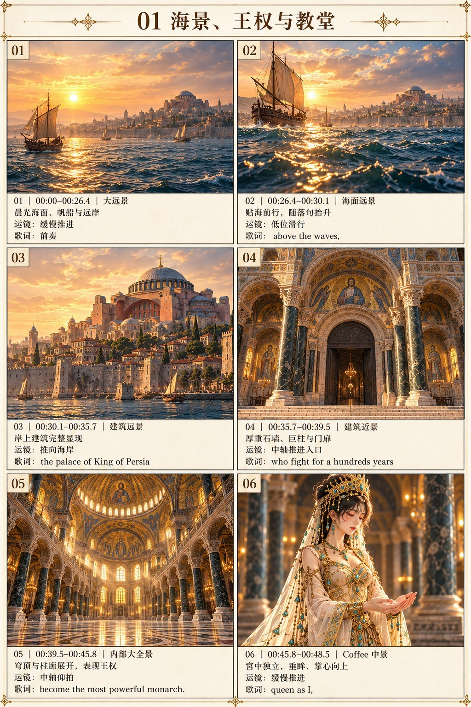
| 镜 · 时间 | 画面 | 歌词 |
|---|---|---|
| 01 · 00:00–00:26.4 | 大远景 · 缓慢推进。晨光海面、帆船与远岸 | 前奏 |
| 02 · 00:26.4–00:30.1 | 海面远景 · 低位滑行。贴海前行，随落句抬升 | above the waves, |
| 03 · 00:30.1–00:35.7 | 建筑远景 · 推向海岸。岸上建筑完整显现 | the palace of King of Persia |
| 04 · 00:35.7–00:39.5 | 建筑近景 · 中轴推进入口。厚重石墙、巨柱与门扉 | who fight for a hundreds years |
| 05 · 00:39.5–00:45.8 | 内部大全景 · 中轴仰拍。穹顶与柱廊展开，表现王权 | become the most powerful monarch. |
| 06 · 00:45.8–00:48.5 | Coffee 中景 · 缓慢推进。宫中独立，垂眸、掌心向上 | queen as I, |
· · ·
02 宫中独舞、海上回忆
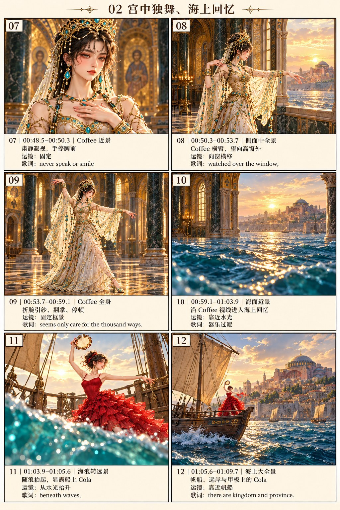
| 镜 · 时间 | 画面 | 歌词 |
|---|---|---|
| 07 · 00:48.5–00:50.3 | Coffee 近景 · 固定。肃静凝视，手停胸前 | never speak or smile |
| 08 · 00:50.3–00:53.7 | 侧面中全景 · 向窗横移。Coffee 横臂，望向高窗外 | watched over the window, |
| 09 · 00:53.7–00:59.1 | Coffee 全身 · 固定框景。折腕引纱、翻掌、停顿 | seems only care for the thousand ways. |
| 10 · 00:59.1–01:03.9 | 海面近景 · 靠近水光。沿 Coffee 视线进入海上回忆 | 器乐过渡 |
| 11 · 01:03.9–01:05.6 | 海浪转远景 · 从水光抬升。随浪抬起，显露船上 Cola | beneath waves, |
| 12 · 01:05.6–01:09.7 | 海上大全景 · 靠近帆船。帆船、远岸与甲板上的 Cola | there are kingdom and province. |
· · ·
03 海上独舞、阳台相遇
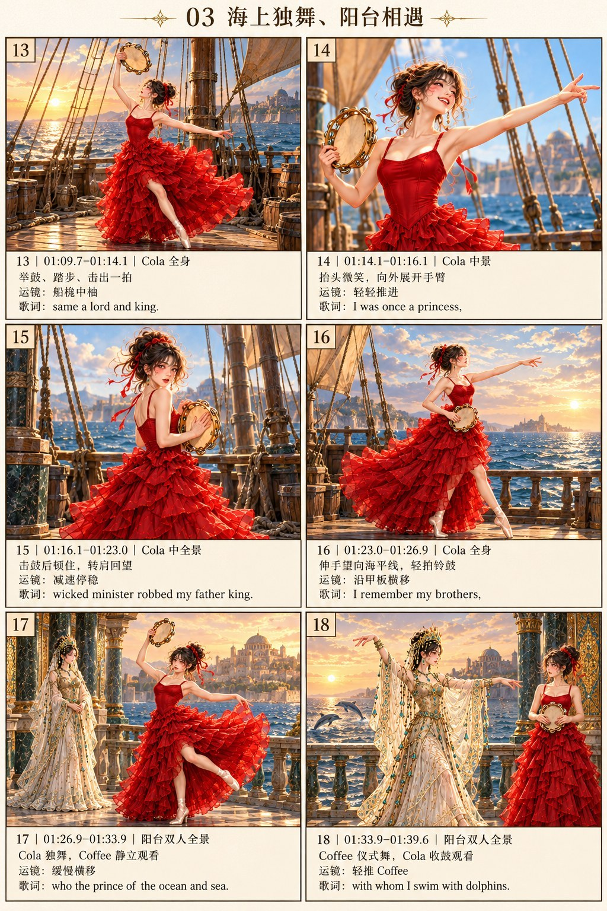
| 镜 · 时间 | 画面 | 歌词 |
|---|---|---|
| 13 · 01:09.7–01:14.1 | Cola 全身 · 船桅中轴。举鼓、踏步、击出一拍 | same a lord and king. |
| 14 · 01:14.1–01:16.1 | Cola 中景 · 轻轻推进。抬头微笑，向外展开手臂 | I was once a princess, |
| 15 · 01:16.1–01:23.0 | Cola 中全景 · 减速停稳。击鼓后顿住，转肩回望 | wicked minister robbed my father king. |
| 16 · 01:23.0–01:26.9 | Cola 全身 · 沿甲板横移。伸手望向海平线，轻拍铃鼓 | I remember my brothers, |
| 17 · 01:26.9–01:33.9 | 阳台双人全景 · 缓慢横移。Cola 独舞，Coffee 静立观看 | who the prince of the ocean and sea. |
| 18 · 01:33.9–01:39.6 | 阳台双人全景 · 轻推 Coffee。Coffee 仪式舞，Cola 收鼓观看 | with whom I swim with dolphins. |
· · ·
04 阳台对舞、前进与退却
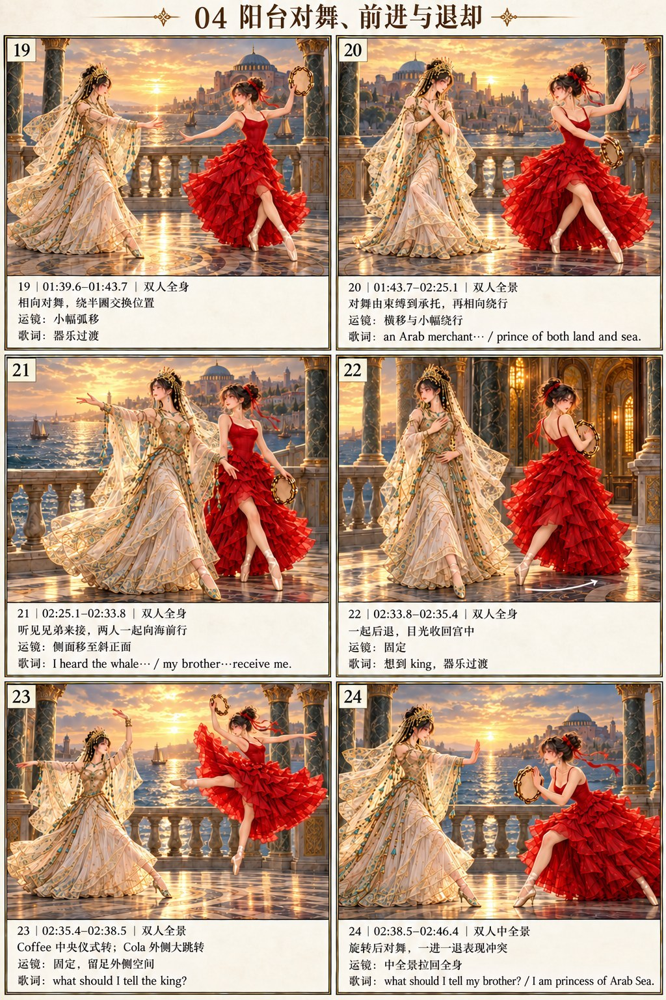
| 镜 · 时间 | 画面 | 歌词 |
|---|---|---|
| 19 · 01:39.6–01:43.7 | 双人全身 · 小幅弧移。相向对舞，绕半圈交换位置 | 器乐过渡 |
| 20 · 01:43.7–02:25.1 | 双人全景 · 横移与小幅绕行。对舞由束缚到承托，再相向绕行 | an Arab merchant made me slaves, a price to the might King of Perish. I gave birth a son the king, the prince of both land and sea. 其后为器乐间奏 |
| 21 · 02:25.1–02:33.8 | 双人全身 · 侧面移至斜正面。听见兄弟来接，两人一起向海前行 | I heard the whale, knows my brother are driving the whale to receive me. |
| 22 · 02:33.8–02:35.4 | 双人全身 · 固定。一起后退，目光收回宫中 | 想到 king，器乐过渡 |
| 23 · 02:35.4–02:38.5 | 双人全景 · 固定，留足外侧空间。Coffee 中央仪式转；Cola 外侧大跳转 | what should I tell the king? |
| 24 · 02:38.5–02:46.4 | 双人中全景 · 拉回全身。旋转后对舞，一进一退表现冲突 | what should I tell my brother? I am princess of Arab Sea. |
· · ·
05 双人定姿、环绕与细密画
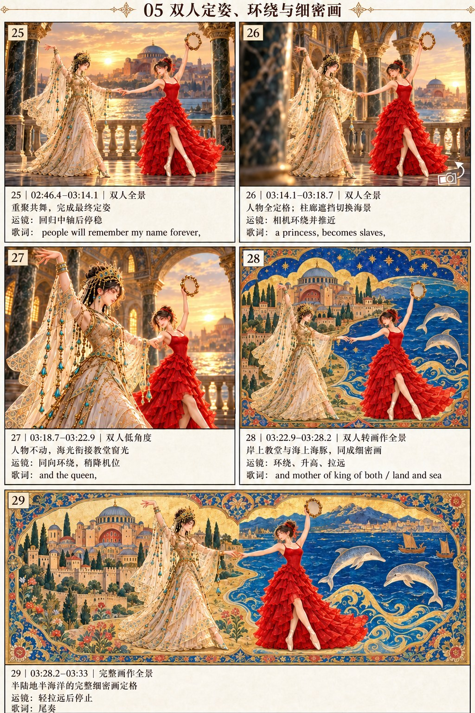
| 镜 · 时间 | 画面 | 歌词 |
|---|---|---|
| 25 · 02:46.4–03:14.1 | 双人全景 · 回归中轴后停稳。重聚共舞，完成最终定姿 | 前段为器乐。people will remember my name forever, |
| 26 · 03:14.1–03:18.7 | 双人全景 · 相机环绕并推近。人物全定格；柱廊遮挡切换海景 | a princess, becomes slaves, |
| 27 · 03:18.7–03:22.9 | 双人 · 低角度同向环绕，稍降机位。人物不动，海光衔接教堂窗光 | and the queen, |
| 28 · 03:22.9–03:28.2 | 双人转画作 · 全景环绕、升高、拉远。岸上教堂与海上海豚，同成细密画 | and mother of king of both land and sea |
| 29 · 03:28.2–03:33 | 完整画作 · 全景轻拉远后停止。半陆地半海洋的完整细密画定格 | 尾奏 |
· · ·
图像使用内置 image_gen 生成。完整生成与修正提示词见项目内 prompts.txt 与文字镜头表。